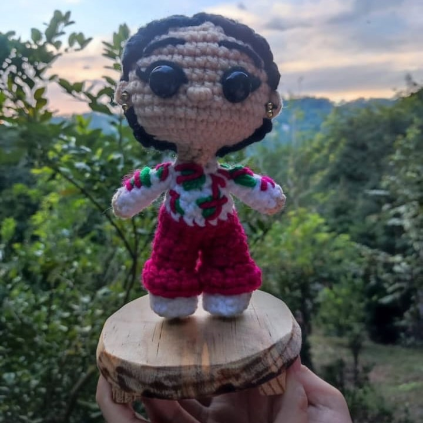
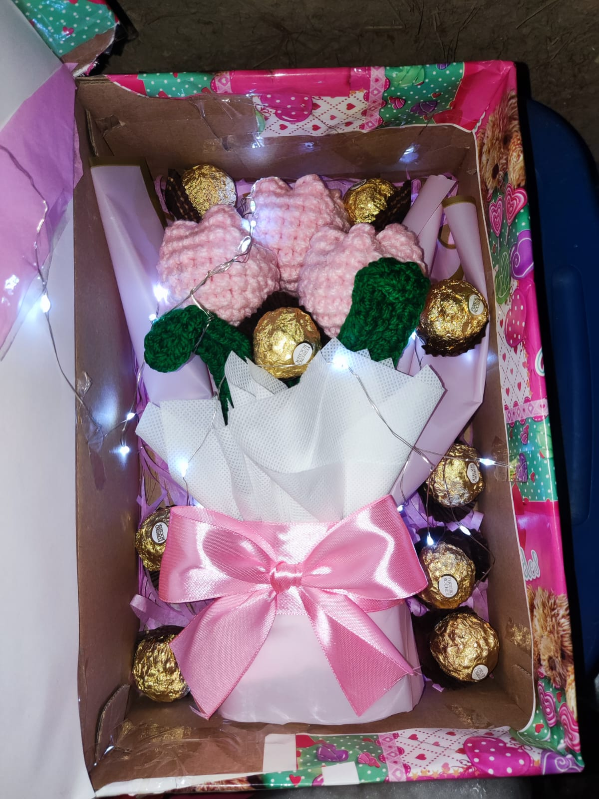
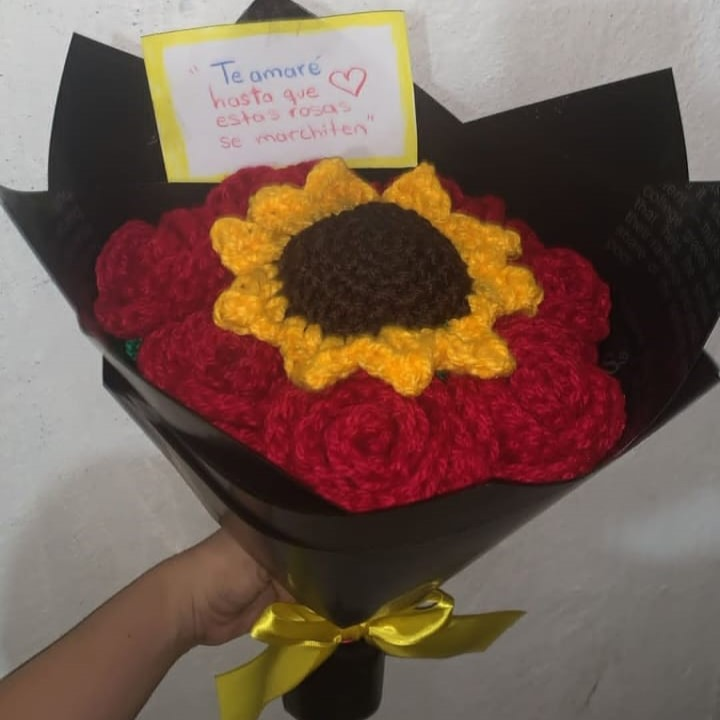
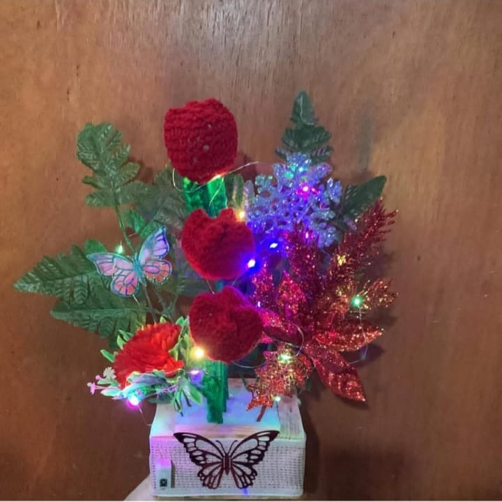
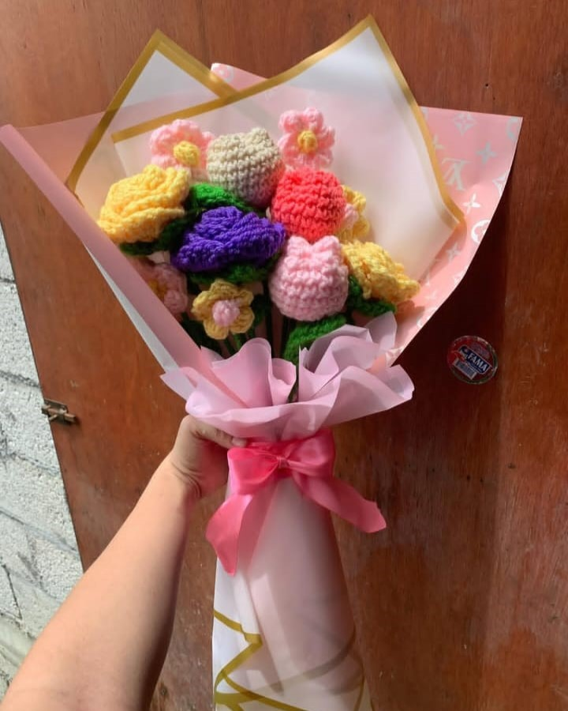
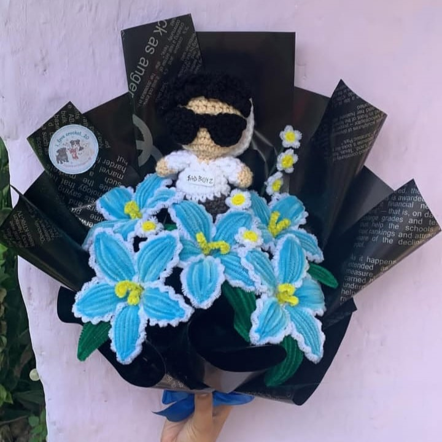
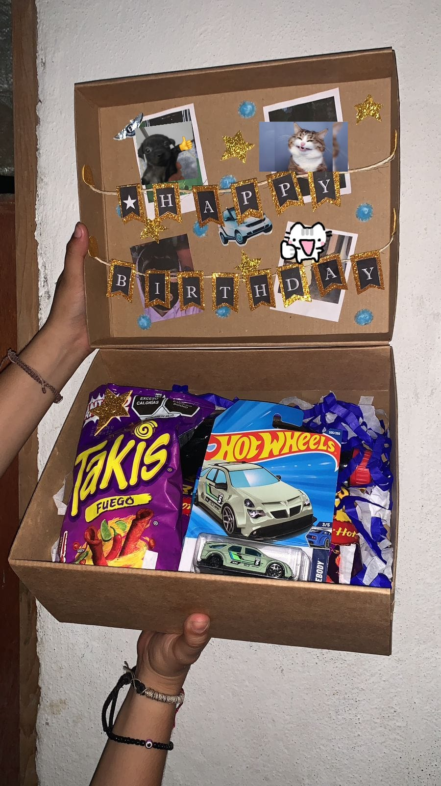

Gracias a ustedes
Gracias a ti, este sueño de compartir nuestra pasión por el tejido y las manualidades se ha hecho realidad. Tejemos con mucho amor para ti, además del tejido realizamos flores tanto de listón y de limpiapipas y muñecos de limpiapipas.
Cada pieza está hecha con paciencia y mucho amor. Amamos las piezas que les realizamos.
Amamos saber que nosotros hemos estado en momentos especiales.
Este sitio fue creado con fines educativos para una práctica de desarrollo web.Ver productos
Nuestras Creaciones tejidas

Personita tejida con base de madera

Tulipanes tejidos con ferreros en caja de cartón y luces

Rosas y girasol tejidos con nota personalizada

Centro de mesa tejido

Ramo de flores tejidas colores pastel

Arreglo de flores de limpiapipas con amigurumi tejido

Caja personalizada de cumpleaños
Materiales que utilizamos
Para amigurumis y flores tejidas:
- Hilo de algodón
- Lana acrílica
- Hilo mercerizado
- Hilo velvet (terciopelado)
- Ganchillo
- Palillos
Para flores y muñecos de limpiapipas:
- Limpiapipas
- Palillos de brocheta
- Palos de alambre
- Espuma floral (oasis)
Para flores de listón:
- Listón satinado
- Palillos de brocheta
Tipos de creaciones que realizamos
- Muñecos tejidos
- Flores de listón
- Flores de limpiapipas
- Flores tejidas
Tabla de nuestras creaciones
| Creación | Material principal | Nivel de dificultad |
|---|---|---|
| Muñecos tejidos | Hilo de algodón | Depende el tamaño |
| Flores de listón | Listón | Fácil |
| Flores limpiapipas | Limpiapipas | Fácil |
| Flores tejidas | Hilo de algodón | Medio |
Puedes conocer más sobre lo que hacemos en este enlace:
Nuestra cuenta de Instagram I love Crochet